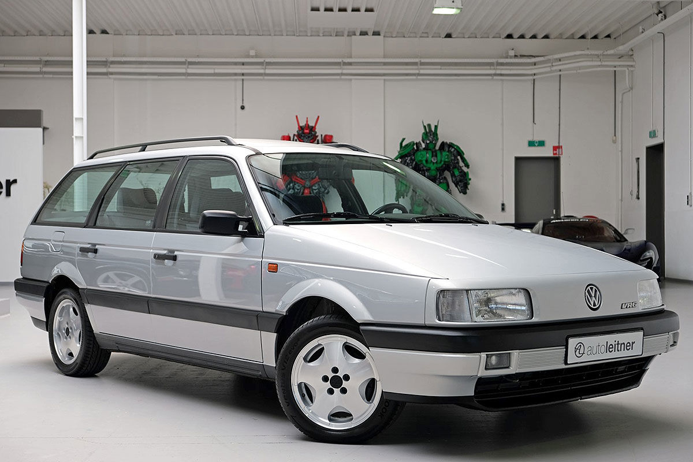

VW Passat generations
Passat b1
 info
info
Passat b2
 info
info
Passat b3
 infoPassat b4
infoPassat b5, b5.5

The B5 version of the Volkswagen Passat, based on the Volkswagen Group B5 platform, was launched in 1997 in North America and Europe as well as during March 1998 in Australia.
The Passat introduced a new design language, first seen on the Concept 1 concept car, for the latest generation of Volkswagens such as the Mk4 Golf, Bora, and Polo Mk4. The design with raked windscreens and smooth underpinnings helped give the B5 Passat sedan a 0.27 coefficient of drag. The B5 Passat included higher-quality interior trim and the availability of luxury options to differentiate it in the marketplace.
The car featured fully independent four-link front suspension; and a semi-independent torsion beam for front-wheel-drive models or a fully independent suspension on the 4motion 4WD models. The 4WD version was introduced in 1997 as an option for the 1.8, 2.8 V6, 1.9 TDI, and 2.5 V6 TDI engines, using a second-generation Torsen T-2 based 4WD system to minimise loss of traction. The 1.8 L petrol engine in the Passat and Audi A4 has a lower oil capacity than transverse applications of the same engine (4.6 US quarts (4.4 l) in transverse, 4.3 US quarts (4.1 l) longitudinal). Three transmission options were available: a 5-speed manual, a 6-speed manual (codename 01E), and a 5-speed automatic transmission with tiptronic. There was also a 4-speed automatic transmission, available only in 66kW and 81kW 1.9 L TDI, as well as some gasoline models.
b5.5
 info
info